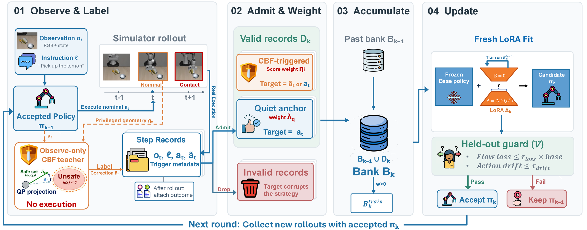
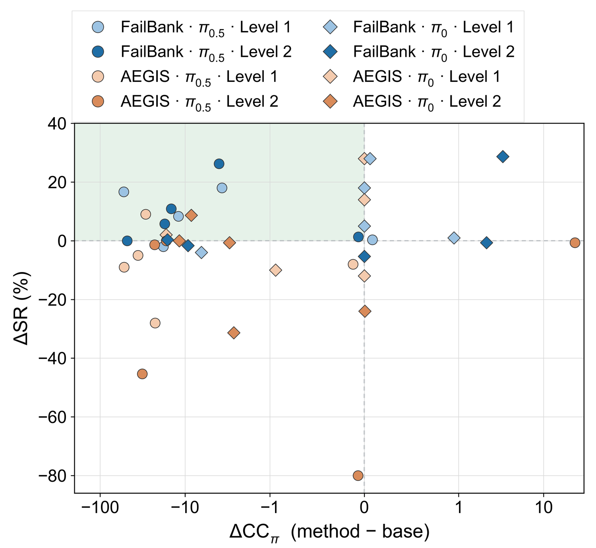
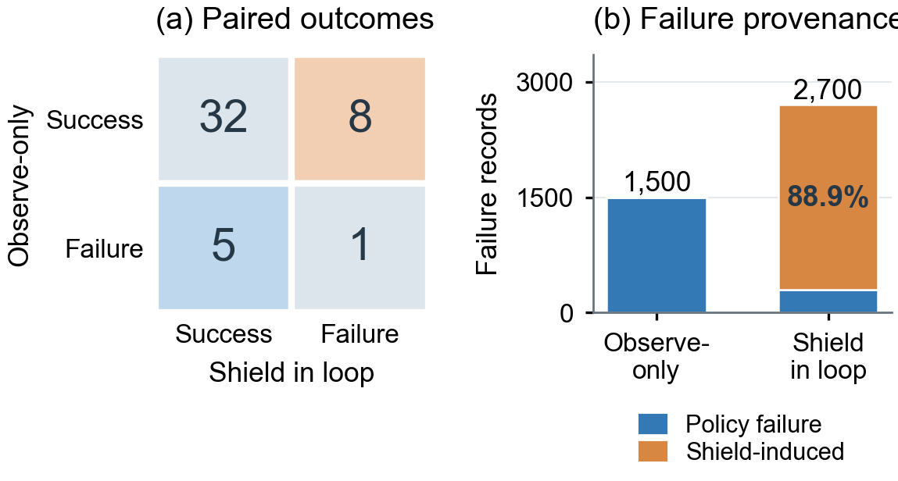
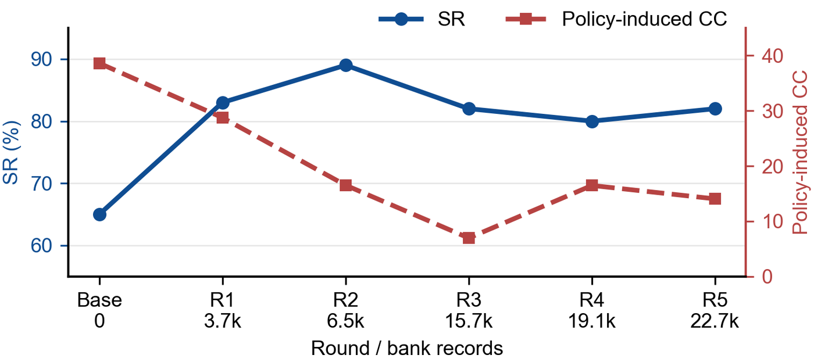

Learning from Runtime Feedback through Failure-Bank Self-Evolution for Vision-Language-Action Models

Use the shield as a teacher, not as a filter
Runtime shields such as control-barrier-function (CBF) filters correct individual actions of a VLA policy, but the policy itself never changes. The same disagreement between policy and shield recurs every episode, and on harder tasks it can block progress entirely, as in the trajectory above.
FailBank converts those corrections into a policy update. While the policy controls the robot, an observe-only CBF teacher labels every action it would have changed. The labels are filtered by what actually happened afterwards, accumulated across rounds in a failure bank, and distilled into a LoRA adapter that is only accepted if it passes a held-out drift guard. The shield is used during collection and switched off at deployment.
Higher success, comparable cost
Across ten static-obstacle tasks, mean SR rises from 66.0% to 74.5% on π0.5 and from 47.5% to 54.4% on π0, with policy-induced cost comparable to runtime shielding (30.76 vs 29.01 and 8.09 vs 6.27).
No collapse on hard tasks
On π0.5, shielding in the loop drops Level 2 Onion from 81.3% to 1.3% and Tomato from 74.0% to 28.7%. FailBank reaches 82.7% and 84.9% on the same tasks.
Transfer from one task
All update data comes from Level 1 Mango. The gains extend to held-out initial states, unseen Level 1 tasks and Level 2 without Level 2 update data.
Four stages per round

Observe and label
The current policy acts. A CBF teacher with privileged scene geometry proposes ãt for every nominal action and records whether it would have intervened. Only translation channels are edited.
Admit and weight
Each triggered record gets a weight from its observed consequences (forward barrier margin, progress, recovery, cost). Records whose target would teach a bad action are dropped: post-contact and emergency corrections, and everything from failed episodes except early, genuine corrections.
Accumulate
New records are added to the bank, never substituted, so each round adds failures the previous policy made. The held-out split is taken episode-wise by initial state.
Update with a guard
A fresh LoRA adapter is fitted on the first action of each chunk with the record weights. It is kept only if held-out flow loss stays within 1.10× and first-action drift within 0.05 of the starting policy.
VLA-Arena static obstacles, Levels 1 and 2
Each backbone is compared with its own base policy and with AEGIS, a CBF shield with GLM-4.5V perception that runs in the loop, under matched initial states. SR is task success (%). CC is VLA-Arena's official cumulative cost; CCpolicy removes cost that is already present in the initial state. Level 1 Mango is the only task any update data came from.
Ten-task means with equal task weight. BRS summarises success and policy-induced cost relative to the base policy (base = e−1 ≈ 0.368; 1 = no failures and no policy-induced cost).
Per-task results. Best SR and CCpolicy per row in bold.

Base-relative score
The two terms are the remaining failure rate and the remaining policy-induced cost, each relative to the task's base policy. SR and CC stay the primary metrics; BRS is a compact summary of both.
Generalization
- Held-out initial states on π0.5 Level 1 Mango: SR 71.1% → 93.3%.
- π0, the four Level 1 tasks never used for collection: SR 51.0% → 62.7%.
- Level 2: no Level 2 rollout enters the update bank.
Why the teacher must not act during collection

If the shield's corrections are executed while collecting, the trajectory changes. On eight initial states the policy succeeds on its own but fails once the shield steers it.
Those eight states produce 2,400 of the 2,700 failure records of a shield-in-loop bank (88.9%). They are failures of the shielded system, not of the policy on its own state distribution, so they are the wrong thing to learn from. Observe-only collection keeps the policy's own states and still records what the shield would have done.
Accumulated rounds

Most of the success gain arrives in the first round. SR differences between adjacent rounds are not statistically significant; the later rounds mainly move cost.
Limitations
- The default teacher reads ground-truth hazard positions from the simulator. It is a source of supervision in simulation, not a deployable shield.
- Only the static-obstacle safety suite is evaluated. The other VLA-Arena safety suites do not fit the obstacle model for structural reasons, documented in the paper's appendix.
- Giving loss weight to successful uncorrected steps (quiet anchors, λq = 0.2) helped in the original run but did not survive retraining (ten-task ΔSR −5.73, ΔCCpolicy +9.68). The reported method uses λq = 0.
- Results are exact for one GPU model. The same weights on a different GPU model give different trajectories, so every comparison pins its cells to one host.
Code and reproduction
The release contains all four stages, the held-out guard and the evaluation harness. It runs inside VLA-Arena's OpenPI environment with one small patch (a step seam in the evaluator). Only the core is needed to reproduce FailBank; the AEGIS baseline is an optional extra.
# VLA-Arena at the verified commit, plus the FailBank patch git clone https://github.com/PKU-Alignment/VLA-Arena.git && cd VLA-Arena git checkout 2ddcb00 && git apply ../failbank/patches/vla-arena-2ddcb00.patch # inside VLA-Arena's OpenPI environment pip install -e ../failbank export FAILBANK_CHECKPOINTS=/path/to/checkpoints # Arena pi0.5 / pi0 finetunes bash ../failbank/examples/minimal/run_minimal.sh # collect, gate, one guarded update, evaluate
The teacher is an interface. Any object with reset(ctx) and propose(ctx, a_t) that returns a proposal and a trigger can replace the CBF teacher (--teacher package.module:Class). A different teacher gives different labels and will not reproduce the paper's numbers.
Before release, the refactored code was run against the original research code and the archived runs on the same machine: evaluation cells matched step for step (executed actions, costs and teacher verdicts), and collected records, derived folds and the gated training set matched byte for byte.
BibTeX
@article{failbank2026,
title = {Learning from Runtime Feedback through Failure-Bank
Self-Evolution for Vision-Language-Action Models},
author = {TBA},
journal = {arXiv preprint},
year = {2026}
}